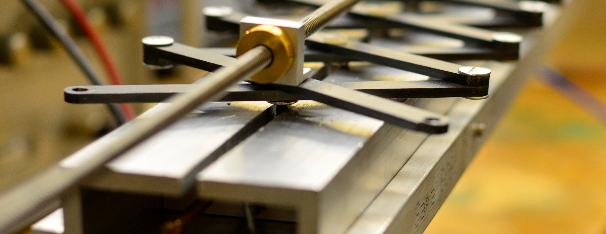

Axion Dark Matter eXperiment
During the summer of 2016, I participated in an REU (research experiences for undergraduates) at the University of Washington in Seattle. I worked on the Axion Dark Matter eXperiment (ADMX), a device that searches for particles called axions which are one of the candidates for what makes up dark matter. A more in depth discussion of this is found in this short paper.
I worked with a small team that built a small prototype that demonstrated an alternative cavity that could be used to search for axions more effectively. This, rather surprisingly to me, involved a lot of work with Arduino. By the end of my time there, we had succesfully brought the experiment to the data taking stage.